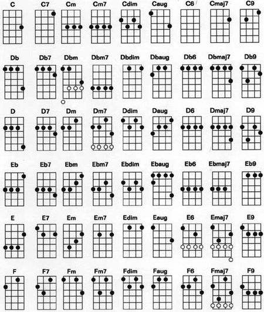

双冠王
尤克里里教学——初识基本和弦
和弦是啥？
一般人玩一个乐器，第一句肯定问：这个哆在哪？ 没错，和弦就可以看作是哆唻咪等音符的组合，左手按住和弦，右手拨琴弦就会发出悦耳的声音了。我们的目的是快速上手，快速演奏出想唱的歌，所以这些细节没必要一开始搞懂，等学到瓶颈再来深入。
C Am F G7 这四个和弦被称为无敌四和弦。之所以无敌，是因为掌握了它们就可以演奏很多歌曲.

和弦是啥？
一般人玩一个乐器，第一句肯定问：这个哆在哪？ 没错，和弦就可以看作是哆唻咪等音符的组合，左手按住和弦，右手拨琴弦就会发出悦耳的声音了。我们的目的是快速上手，快速演奏出想唱的歌，所以这些细节没必要一开始搞懂，等学到瓶颈再来深入。
C Am F G7 这四个和弦被称为无敌四和弦。之所以无敌，是因为掌握了它们就可以演奏很多歌曲.